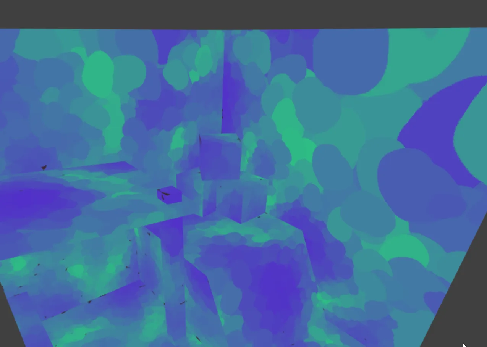
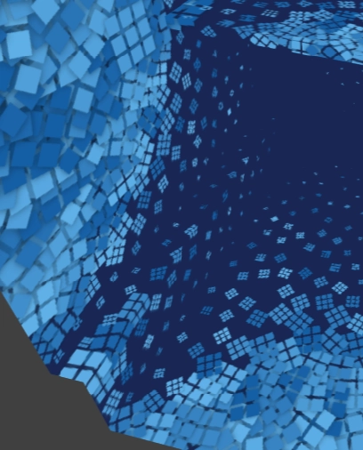
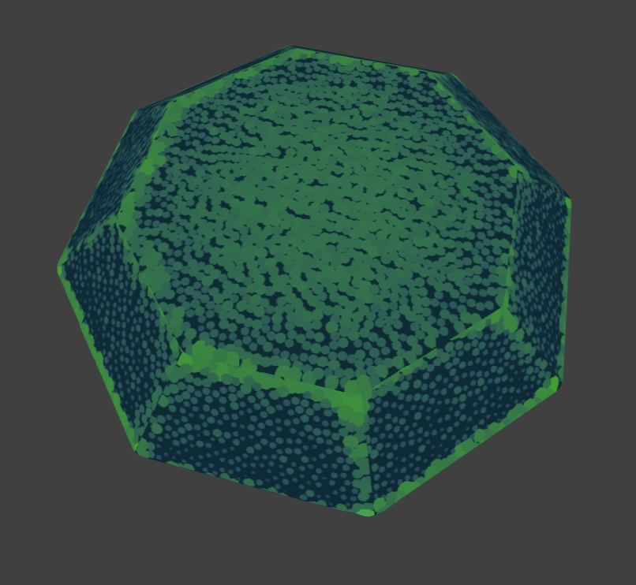
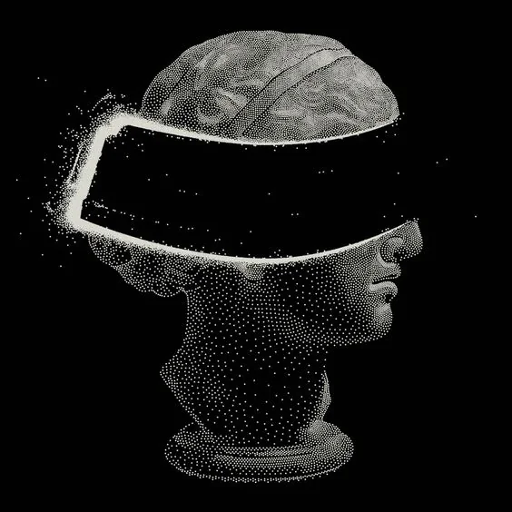
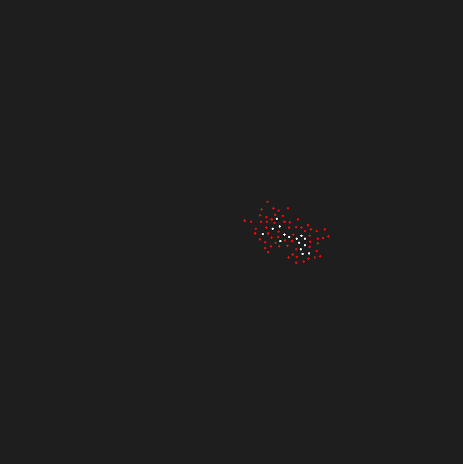

A bunch of random things I learned while trying to make an art tool
Jet Jones

Style Bake




Points
and a brief overview of some scattering techniques
Stippling / Dithering?

Sampling per decal

Random
Blue Noise, Uniform, Gaussian, Poisson Etc
Dart throwing

Disk Sampling

Other techniques and why they weren't suitable
Pregenerated
Chunked
Rethrowing
Sample elimination
Ai probably
Even More Ideas

More stuff
Debugging pixels

Debugging pixels


Gradients!

https://raphlinus.github.io/color/2021/01/18/oklab-critique.html
Gradients Are Easy
https://bottosson.github.io/posts/oklab/
Strict about color spaces
Decal rendering open question
Deferred?

Classic Decals
http://blog.wolfire.com/2009/06/how-to-project-decals/
Other techniques
https://www.inf.usi.ch/hormann/papers/Scharfig.2010.HA3.pdf